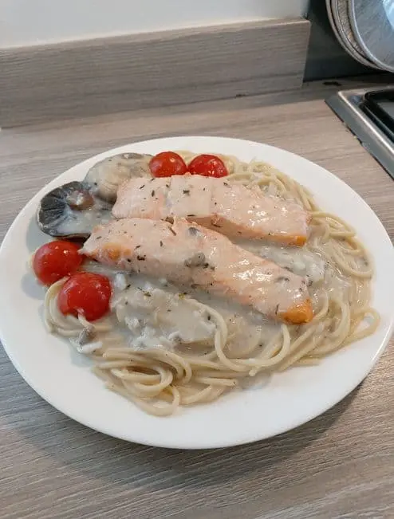
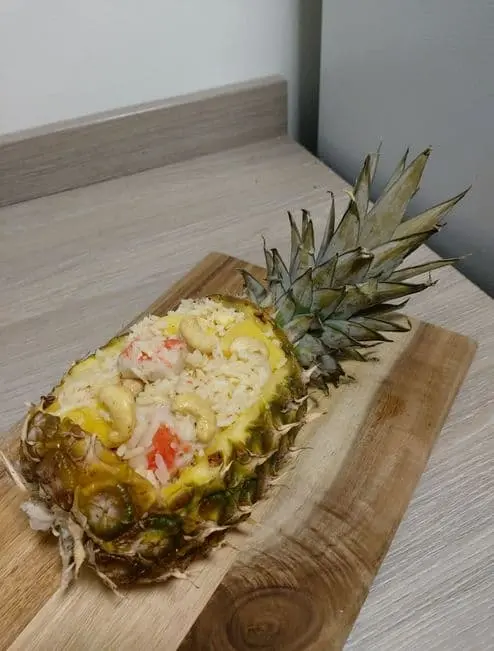
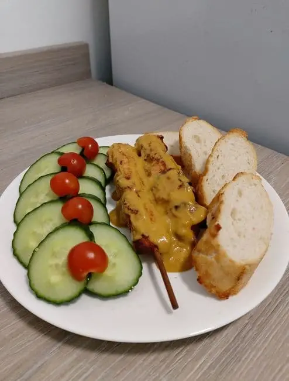
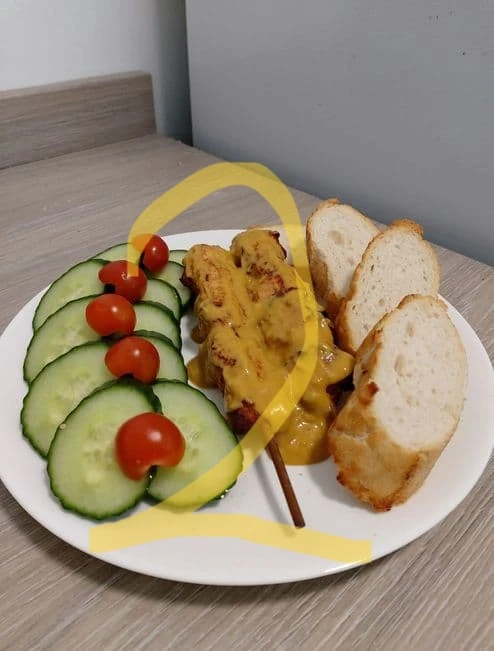
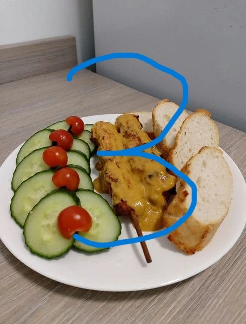

A virtual restaurant website with visually appealing, interactive and user-friendly features.

Salmon Spaghetti

Thai Pineapple Fried Rice

Satay Chicken Skewers

4

5
Technology Used
Figma - wireframe
HTML - semantic
CSS - preprocessing with SCSS and postprocessing with PostCSS
JavaScript – postprocessing with Babel
npm, Gulp
Git, GitHub
Design of website
used figma to generate wireframe
css flexbox & grid
scss functions and mixins
mobile first design
responsive web design with 8 breakpoints, and responsive text
Features of website
For the Menu
On small screen: accordions and carousel with progress bar
On large screen: menu tabs with panels
For the Reservation
reservation form with default date and time
initial form validation on client side
pop up message to confirm booking details
Excellent Quality of website
achieved near-perfect scores on Google PageSpeed Insights, consistently scoring 96-100 for performance,
accessibility, best practices, and SEO on both mobile and desktop platforms
website could be loaded quickly, accessible by people with disability, easily searchable by search engine
all the html markup and css validated by W3C
Streamline workflow
By using gulp and npm:
generate development & production code
resize and optimize images
use broswersync to update changes made
create minified critical and non-critical css from scss files automatically
create minified critical and non-critical scripts in legacy and modern code automatically